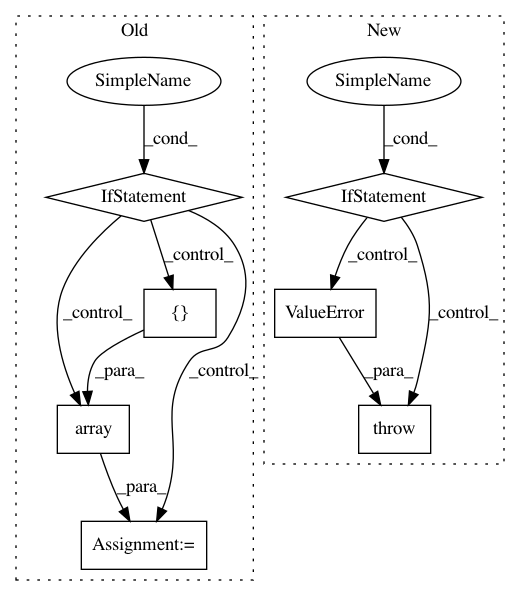

6496c605ad12f3eaac3939804ee8bef0b82a2692,src/skmultiflow/trees/multi_target_regression_hoeffding_tree.py,MultiTargetRegressionHoeffdingTree,partial_fit,#MultiTargetRegressionHoeffdingTree#Any#Any#Any#,646
Before Change
weight = np.array([1.0], dtype=np.float64)
row_cnt, _ = get_dimensions(X)
wrow_cnt, _ = get_dimensions(weight)
if row_cnt != wrow_cnt:
weight = np.array([weight[0]] * row_cnt, dtype=np.float64)
for i in range(row_cnt):
if weight[i] != 0.0:
self._train_weight_seen_by_model += weight[i]
self._partial_fit(X[i], y[i], weight[i])
After Change
row_cnt, _ = get_dimensions(X)
if weight is None:
weight = np.ones(row_cnt)
if row_cnt != len(weight):
raise ValueError("Inconsistent number of instances ({}) and weights ({}).".format(row_cnt, len(weight)))
for i in range(row_cnt):
if weight[i] != 0.0:
self._train_weight_seen_by_model += weight[i]
self._partial_fit(X[i], y[i], weight[i])
In pattern: SUPERPATTERN
Frequency: 3
Non-data size: 7
Instances
Project Name: scikit-multiflow/scikit-multiflow
Commit Name: 6496c605ad12f3eaac3939804ee8bef0b82a2692
Time: 2019-02-27
Author: aquancva@gmail.com
File Name: src/skmultiflow/trees/multi_target_regression_hoeffding_tree.py
Class Name: MultiTargetRegressionHoeffdingTree
Method Name: partial_fit
Project Name: scipy/scipy
Commit Name: 0420057a63473b42e714554e604a12e37e243a37
Time: 2018-06-30
Author: adibhar97@gmail.com
File Name: scipy/spatial/transform/rotation.py
Class Name: Rotation
Method Name: __init__
Project Name: scikit-multiflow/scikit-multiflow
Commit Name: 6bf1dd3ada59f67c91c815a31d440de61632220e
Time: 2019-02-25
Author: jacob.montiel@gmail.com
File Name: src/skmultiflow/trees/multi_target_regression_hoeffding_tree.py
Class Name: MultiTargetRegressionHoeffdingTree
Method Name: partial_fit